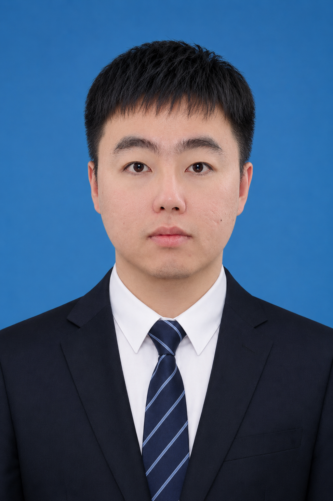

杨飞扬，助理研究员，吉林大学白求恩第一临床医院博士后，吉林大学工学博士，吉林大学第一医院"白求恩学者"，现为 MICS 委员。
研究方向为医学影像处理。近五年以第一作者/通讯作者在 IJCV、IEEE JBHI、KBS 等 CCF A 类期刊/会议上发表论文多篇。所在研究组科研氛围浓厚，注重因材施教，曾指导或协助指导多名本科生、硕士生、博士生从事科研工作，具有丰富的指导经验。
| 吉林大学 | 计算机软件与理论 · 工学博士 |
| 延边大学 | 计算机应用技术 · 工学硕士 |
| 长春大学 | 计算机科学与技术 · 工学学士 |